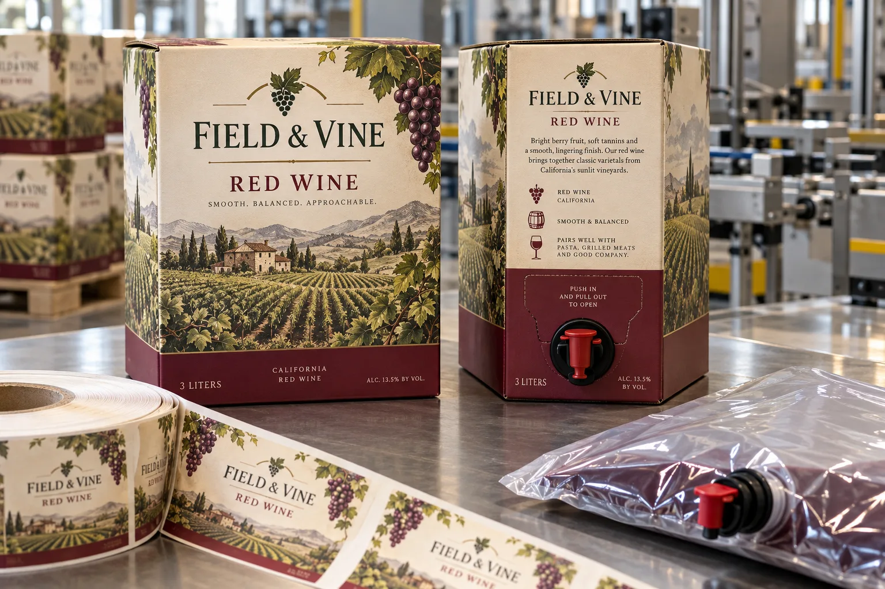

Three parts, three different jobs
I would not treat boxed wine as a large flat bottle. The wine sits in a flexible inner bag; the tap dispenses it; the paperboard carton protects and displays it. Smurfit Kappa's bag-in-box system description makes those roles clear. The self-adhesive label, if used, decorates or identifies the carton. It does not replace the inner bag or solve tap performance.
A blank carton can be a sensible platform for several wines. But a large decorative label may bridge a score line, hide opening instructions or put a barcode on the flap that gets torn away. I would start with an erected, filled box and mark the actual untouched display panel.
Look at the box from the pouring position
Imagine a composite winery offering red and white wine in the same three-liter carton. A roll label differentiates the variants while common cartons reduce inventory. The front name matters on the shelf; the tap-side instructions matter when the customer opens it. I would proof both views together. If the label wraps a corner, the board crease and adhesive must be trialed after the carton is formed, not just on flat stock.
Another composite buyer wants one label size across two capacities. The smaller box has a handle cutout close to the front edge. I would sacrifice a little artwork width rather than cover the handle or risk an edge peeling at that opening. One die can save setup time, but only if it respects the smaller carton.
Test the carton the customer will carry
Apply labels at the planned point in the pack line and assess the actual coated or uncoated board. Check corners after erection, carrying, stacking and normal dispensing. Confirm the final wine copy, volume and any regulated statements with the brand's compliance team for the target market. This article is about carton label engineering, not a legal approval of alcohol labeling.
| Area | Approval question |
|---|---|
| Front panel | Does the label stay on one stable surface? |
| Folds and handle | Is there enough clear margin? |
| Tap panel | Can users open and pour normally? |
| Codes | Can a barcode be scanned after erection? |
Our buying view
Use the carton as a mechanism, not a billboard
I would choose a smaller label on an uninterrupted panel over a full-face graphic that compromises the tap or handle. The finished pack has to be carried and opened before anyone praises the artwork.
Send the erected package
- Filled box and inner-bag/tap arrangement.
- Flat dieline plus erected-panel photos.
- Board coating and application sequence.
- Market-specific approved copy and SKU count.
See wine gift-box label planning for paperboard finishes and recycled-board labels for rougher surfaces.
Frequently asked questions
Can a single label fit every bag-in-box size?
Only after the flat display area, folds, handle and tap-panel geometry are checked for each erected carton.
Can a label cover the tap panel?
The label should not obstruct tap access or opening instructions unless the finished package has been designed and tested for it.
Is the outer label the same as the wine-contact bag?
No. The adhesive label is on the outer carton; the inner bag and tap are separate components with their own requirements.
Related buyer guides
Review your label specification
Send package photos, label dimensions, material details, quantity and application conditions. Include good and failed samples where possible so the discussion starts with evidence.